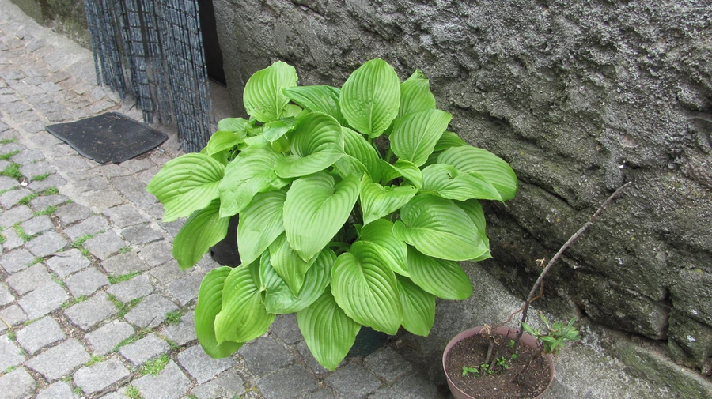

花卉与草本 · 植物界
玉簪 Hosta plantaginea

天门冬科多年生草本，夏季开白色漏斗状花，香气浓郁，叶片宽大优美，是林下与庭院常见的耐阴植物。
- 分类
- 门被子植物门纲木兰纲目天门冬目科天门冬科属玉簪属
- 栖息环境
- 林下阴湿处与庭院，喜半阴湿润
- 地理分布
- 中国长江流域及以南地区；各地庭院广泛栽培
- 保护级别
- 暂无评估；中国未列入国家重点保护野生植物名录
物种志
玉簪为天门冬科玉簪属多年生草本，株高 40–80 厘米，地下具粗壮的根状茎。叶片基生，卵形至心形，宽大，表面深绿色、有光泽，具弧形叶脉。花葶自叶丛抽出，高 40–80 厘米，总状花序着花 10–20 朵，花冠漏斗状，白色，香气浓郁，花期 6–8 月；果实为蒴果。
玉簪原产中国长江流域及以南地区，生于林下阴湿处，各地庭院广泛栽培。它喜半阴湿润的环境，忌强光暴晒，耐寒性较强，适宜疏松肥沃、排水良好的土壤。叶片宽大优美、花色洁白、香气浓郁，是林下与庭院常见的耐阴植物，也常作切花；嫩芽可食，根与叶可入药，有清热解毒之效。栽培以分株繁殖为主，夏季需遮阴并保持土壤湿润。
形态与习性
- 株高40–80 厘米，根状茎粗壮
- 花期6–8 月，花白色、香气浓郁
- 果期花后结蒴果
- 光照喜半阴，忌强光暴晒
- 水分喜湿润，忌积水
- 土壤疏松肥沃、排水良好的土壤
- 主要用途林下观叶观花，切花与药用
趣味知识
- 玉簪的花蕾形似白色玉簪，因此得名。
- 它叶片宽大、耐阴性强，是林下绿化的常用植物。
- 玉簪的花在傍晚开放，香气在夜间更浓郁。
- 嫩芽可食，但根与叶入药需遵医嘱，不可自行采食。